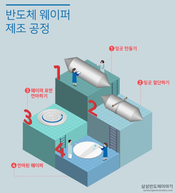
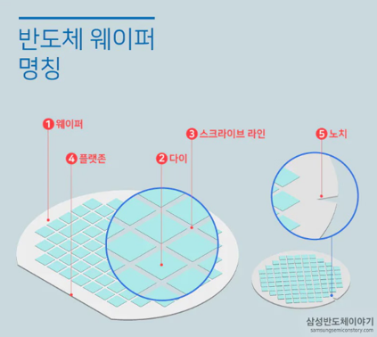

Wafer(웨이퍼)란? 반도체를 만드는 '기판(베이스판)'을 말한다.
주로 실리콘(Si)로 만들어지며, 원형 판위에 회로를 그려서 제작한다.
2. 전체 공정 흐름

① 잉곳(Ingot) 만들기
· 모래에서 추출한 실리콘을 반도체 재료로 사용하기 위해서는 순도를 높이는 정제 과정이 필요
· 실리콘 원료를 뜨거운 열로 녹여 고순도의 실리콘 용액을 만들고 이것을 결정 성장시켜 굳히는 작업을 진행
· 잉곳 : 위 작업을 통해 만들어진 실리콘 기둥
② 잉곳 절단하기(Wafer Slicing)
· 둥근 팽이 모양의 잉곳을 원판형의 웨이퍼로 만드는 과정
· 다이아몬드 톱을 이용해 균일한 두께로 얇게 썰어내는 작업 (잉곳의 지름이 웨이퍼의 크기를 결정)
· 웨이퍼의 크기는 150mm(6인치), 200mm(8인치), 300mm(12인치)등이 있다.
· 웨이퍼 두께가 얇을수록 제조원가는 줄어들며, 지름이 클수록 생산량이 증가된다.
· 때문에 웨이퍼의 두께와 크기는 점차 얇고 커지는 추세
③ 웨이퍼 표면 연마(Lapping & Polishing)
· 절단된 웨이퍼를 가공하여 거울처럼 매끄러운 표면을 만드는 과정
· Bare wafer(베어웨이퍼) = 가공 전의 웨이퍼
3. 반도체 웨이퍼 명칭

웨이퍼 (Wafer)
· 도체 소자의 기반이 되는 실리콘 원형 기판
· 표면에 수백~수천 개의 칩이 형성되며, 모든 공정(노광, 식각, 증착 등)이 이 위에서 진행됨
· 일반적으로 200mm, 300mm 등의 규격으로 생산됨
다이 (Die)
· 웨이퍼 위에 형성된 개별 반도체 칩 단위
· 동일한 회로 패턴이 반복적으로 배열된 구조
· 공정 완료 후 절단(Dicing)되어 각각 독립된 칩으로 사용됨
스크라이브 라인 (Scribe Line)
· 다이와 다이 사이에 존재하는 절단(분리)용 여유 공간
· 웨이퍼를 개별 다이로 나누기 위한 기준선 역할
· 공정 모니터링용 패턴이나 테스트 구조가 포함되기도 함
플랫존 (Flat Zone, Flat)
· 웨이퍼 가장자리를 일부 직선으로 절삭한 부분
· 웨이퍼의 결정 방향 및 타입(P/N형 등) 식별 기준으로 사용됨
· 주로 초기(구형) 웨이퍼에서 사용되던 방식
노치 (Notch)
· 웨이퍼 가장자리에 있는 작은 홈 형태의 표시
· 플랫존을 대체하여 사용되는 정렬 및 방향 식별 기준
· 자동화 장비에서 웨이퍼 방향 인식에 활용됨
기타 내용
· 반도체 집적회로(Semiconductor Integrated circuit)와 웨이퍼의 관계
- 반도체 집적회로란, 다양한 기능을 처리하고 저장하기 위해 많은 소자를 하나의 칩 안에 집적한 전자부품- 웨이퍼라는 기판 위에 다수의 동일 회로를 만들어 반도체 집적회로가 만들어지게 됨- 여담 : Silicon Valley 지명은 반도체 재료인 실리콘과 산타클라라 인근 계곡의 합성으로 만들어지게 되었음
· 잉곳의 원료
- 주로 모래에서 추출한 규소(Si)를 이용함 → 부도체 상태- 규소외에도 갈륨 아세나이드(GaAs) 등이 있음